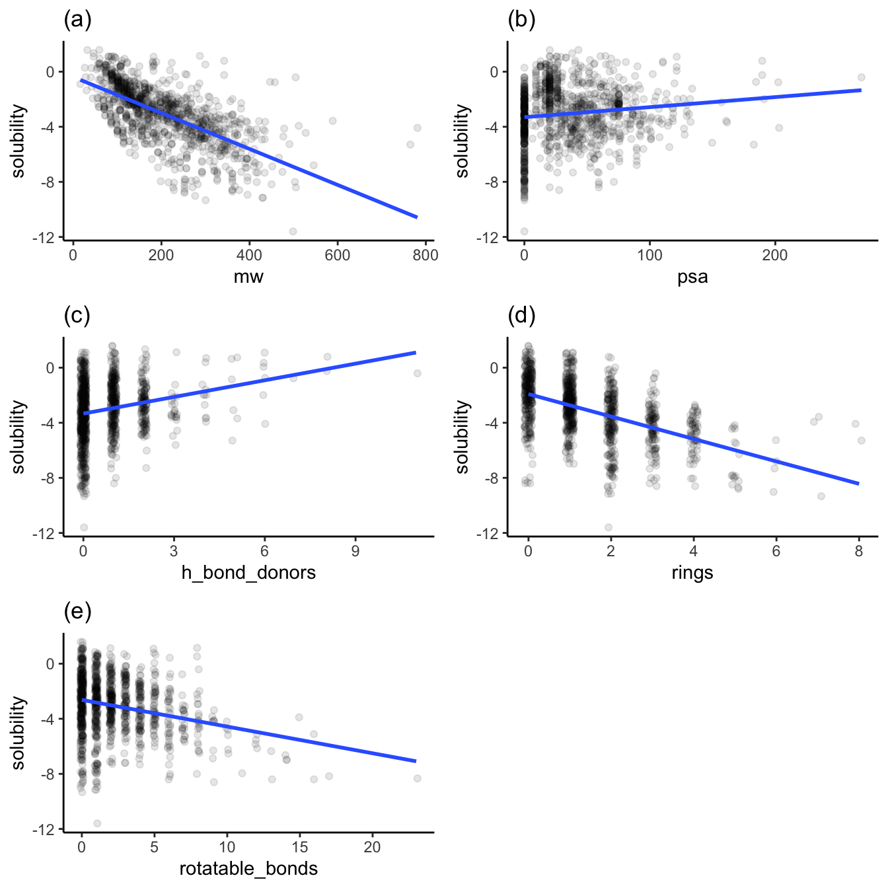
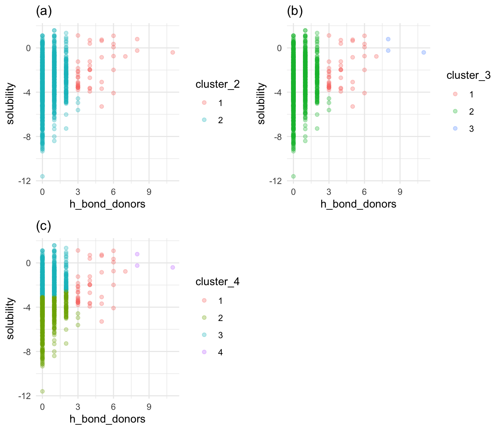

In my prior aqueous solubility regression study, I did an exploratory data visualization and found intriguing plots of solubility versus other variables in the study. I didn’t perform any experimental modeling of those relationships in that study. Here, I followup by performing a cluster analysis of solubility relationships to help future regression modeling efforts. My question is: do clusters within each of these relationships explain each feature’s effect on solubility?
Table 1 is a sample of some of the compounds in the dataset:
As shown above, the subplots 1a, 1b, 1d, 1e, and 1f show distributions that favor the low end of the distribution. This low-end favorability is essential when extracting relationships for values greater in these distributions. For example, data about what happens to solubility with large ring counts are relatively sparse.
Figure 2 contains the plots of solubility versus other variables I want to explore with clustering. Note that the plots have jittered points to prevent overplotting. Also, note that the solubility is in log(mol/L) because solubility in this dataset spans many orders of magnitude.
alpha <-0.1p1 <-ggplot(df, aes(x = mw, y = solubility)) +geom_jitter(alpha = alpha, width =0.1) +geom_smooth(method ="lm", se =FALSE) +labs(title ="(a)")p2 <-ggplot(df, aes(x = psa, y = solubility)) +geom_jitter(alpha = alpha) +geom_smooth(method ="lm", se =FALSE) +labs(title ="(b)")p3 <-ggplot(df, aes(x = h_bond_donors, y = solubility)) +geom_jitter(alpha = alpha, width =0.1) +geom_smooth(method ="lm", se =FALSE) +labs(title ="(c)")p4 <-ggplot(df, aes(x = rings, y = solubility)) +geom_jitter(alpha = alpha, width =0.1) +geom_smooth(method ="lm", se =FALSE) +labs(title ="(d)")p5 <-ggplot(df, aes(x = rotatable_bonds, y = solubility)) +geom_jitter(alpha = alpha, width =0.1) +geom_smooth(method ="lm", se =FALSE) +labs(title ="(e)")grid.arrange(p1, p2, p3, p4, p5, nrow =3)

Relationship of molecular weight to other variables
Each variable has a different trend of its effect on solubility, as shown above. Figures 2b (of polar surface area) and 2c (of h-bond donors) show increasing trends of solubility. Figures 2a (molecular weight), 2d (rings), and 2e (rotatable bonds) show decreasing trends in solubility.
Solubility trends for each variable by cluster
I will display the clustering information as scatter plots, with each point’s color indicating the group from the hierarchical clustering algorithm. For each variable, I make tests with two, three, and four clusters. Cluster_2, cluster_3, and cluster_4 are the variable names for each of these cluster counts, respectively. On each plot, solubility is on the y axis. I am particularly interested in clusters that separate the compounds by their solubilities, i.e., by dividing groups with a line parallel to the x-axis while minimizing the number of groups needed to make this division.
hierarchical_clusters <-function(features_df) { cluster_labels =list() distances <- features_df %>%as.matrix() %>%scale() %>%dist() hclust_out <-hclust(distances, method ="complete") features_df %>%mutate(cluster_2 =as.factor(cutree(hclust_out, k =2)),cluster_3 =as.factor(cutree(hclust_out, k =3)),cluster_4 =as.factor(cutree(hclust_out, k =4)) )}
Figure 3a shows that two clusters are not enough to separate the solubility axis into high and low solubilities. Figure 3c reveals that four clusters show the necessary separation, but the fourth only covers five compounds with large polar surface areas and high solubilities. Figure 3b is just right: it displays a clear break of high and low solubilities with only three clusters.
Solubility versus h-bond donors by cluster
h_bond_donor_cluster_df <-hierarchical_clusters(select(df, solubility, h_bond_donors))cluster_2 <-ggplot(h_bond_donor_cluster_df, aes(x = h_bond_donors, y = solubility, col = cluster_2)) +geom_point(alpha = alpha) +labs(title ="(a)") +theme_minimal()cluster_3 <-ggplot(h_bond_donor_cluster_df, aes(x = h_bond_donors, y = solubility, col = cluster_3)) +geom_point(alpha = alpha) +labs(title ="(b)") +theme_minimal()cluster_4 <-ggplot(h_bond_donor_cluster_df, aes(x = h_bond_donors, y = solubility, col = cluster_4)) +geom_point(alpha = alpha) +labs(title ="(c)") +theme_minimal()grid.arrange(cluster_2, cluster_3, cluster_4, nrow =2)

Solubility versus h-bond donors by cluster
Similar to Figure 3, Figure 4a with two clusters provides no clear break between high and low solubility. Figure 4c shows that the fourth cluster covers a few points a corner of the plot. Once again, Figure 4b shows that three clusters provide a clear break between high and low solubility, with a few points covered by a third cluster. I’ll choose 3 clusters as optimal for h-bond donors.
Figure 5a shows two clusters, each of which straddles high and low solubility. Figure 5b, with three clusters, exhibits the same problem, though the third cluster is generally of low solubility. Figure 5c represents the separation best: cluster 1 is mostly high solubility, cluster 4 is primarily low solubility, and cluster 3 is low solubility. Cluster 2 aggregates between -3 and -5, so it to provides a useful solubility range. I’ll choose four as the optimum number of clusters.
Figure 6a shows two clusters of rotatable bond counts that don’t provide a break between high and low solubility. Figure 6c adds the fourth cluster with a wide span of solubilities and, therefore, not much value. Once again, Figure 6b shows three clusters, with reasonably well-defined breaks around solubilities of -3 and -4. I’ll choose three as the optimum number of clusters for rotatable bonds.
When I use hierarchiical clustering to group solubilities, each variable in the dataset needs a different number of clusters to adequately specify its relastionship to solubility.